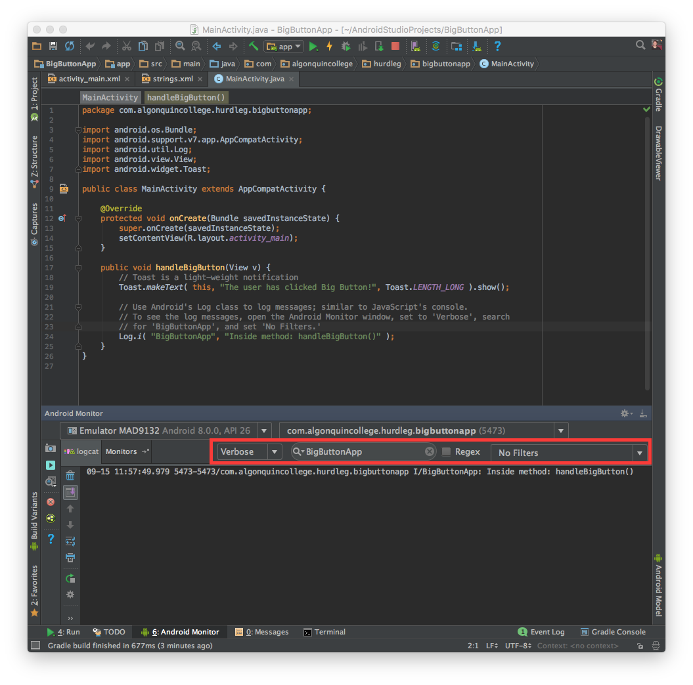

In this document, we'll learn how to set the XML property of the Button to the name of the event handler.
Edit activity_main.xml (res > layout), select the Button from the Component tree.
Find the android:onClick property for the Button. You may need to click View all properties of the Properties window to see all the properties (there's a lot, eh?)
Set the onClick property to the name of the instance method that will be the event handler:
<Button
android:layout_width="wrap_content"
android:layout_height="wrap_content"
android:layout_centerHorizontal="true"
android:layout_centerVertical="true"
android:text="@string/buttonText"
android:textSize="36sp"
android:onClick="handleBigButton"/>
Notice: you only enter the name of the method, and you get to pick the name. The Java convention when naming instance methods is to use camel-case, beginning with a lower-case letter.
In this step, we'll implement the event in Java code.
Edit MainActivity.java, and implement the instance method handleBigButton:
public void handleBigButton(View v) {
// Toast is a light-weight notification
Toast.makeText( this, "The user has clicked Big Button!", Toast.LENGTH_LONG ).show();
// Use Android's Log class to log messages; similar to JavaScript's console.
// To see the log messages, open the Android Monitor window, set to 'Verbose', search
// for 'BigButtonApp', and set 'No Filters.'
Log.i( "BigButtonApp", "Inside method: handleBigButton()" );
}
You'll need to import the android packages for classes Log, Toast, and View. For example, to import the package for class Log, you should see in the editor that Log is in red. Select the word Log, and a red light-bulb should appear. Android Studio is here 2 help.... click the light-bulb, and select Import class. Repeat this step for the remaining imports.
Notice the signature of the instance method handleBigButton:
The body of the method:
Run Big Button App on the emulator, and click Big Button :)
You should see a Toast message (once per button click), and a log message (once per button click).
